I redesigned the entire chat experience on desktop and in the Android app, from the inbox to attachments and the archive. Scroll through each part to watch the old screens turn into the new ones.
The old chat worked like email: a list on one page, each message on another. The redesign brings everything into one view.
The inbox table and the conversation page became one split view.
Photos and locations appear inside the chat, not as file names.
The archive table became Bin, inside the same split view as the rest of the chat.
The app got the same chat: a cleaner inbox, the ad on top, and photos and maps in the conversation.
The old inbox was a long table of messages. Opening one took you to another page, so every reply meant leaving the list.
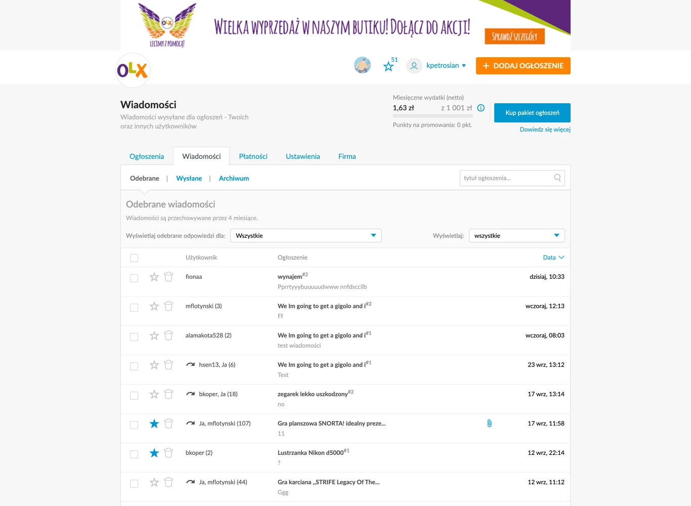
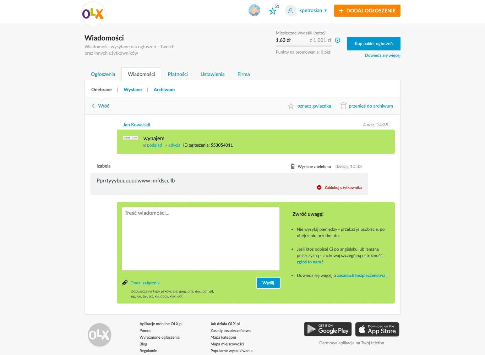
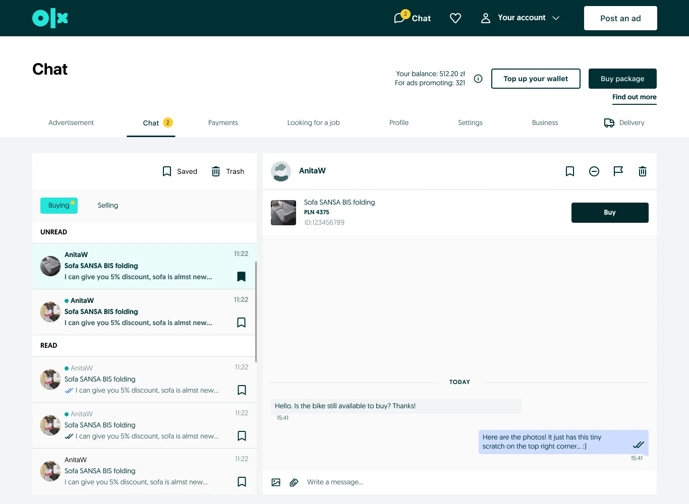
Photos used to arrive as a file name to download. Now they appear in the conversation, and people can share a location too.
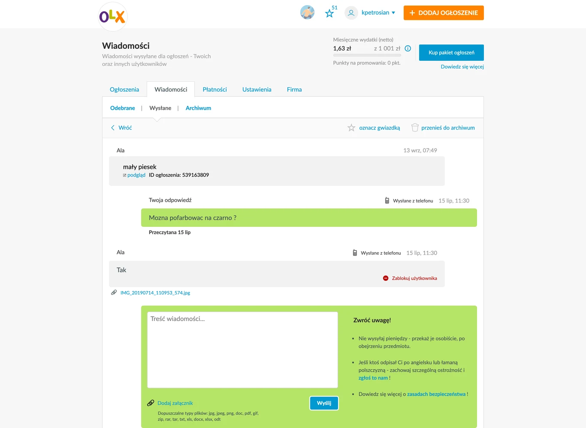
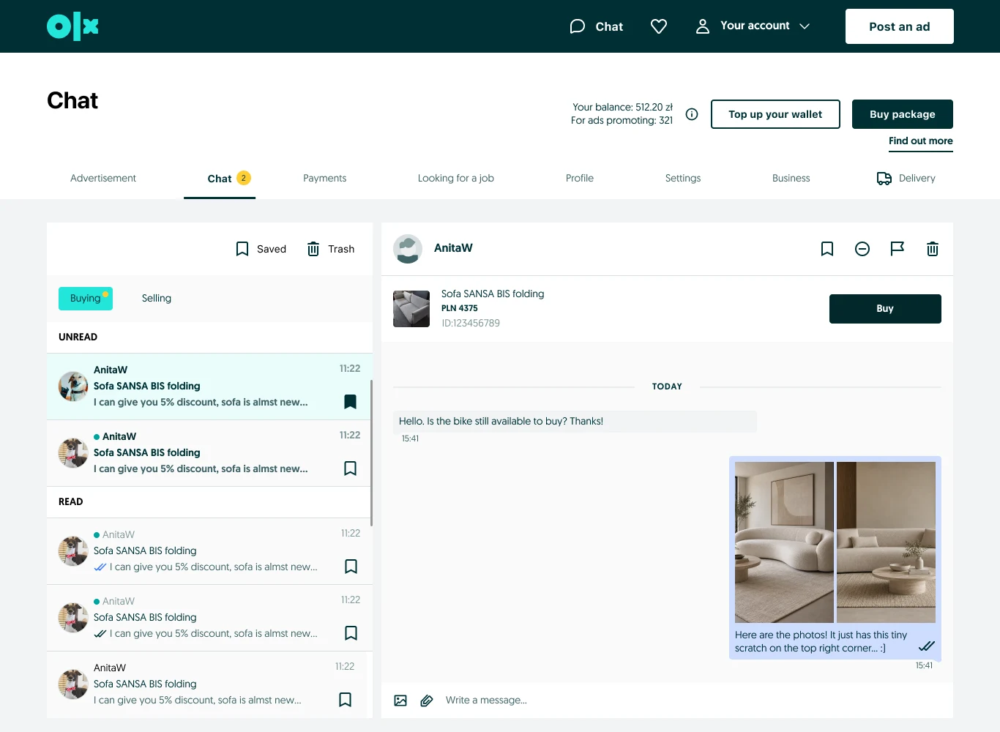
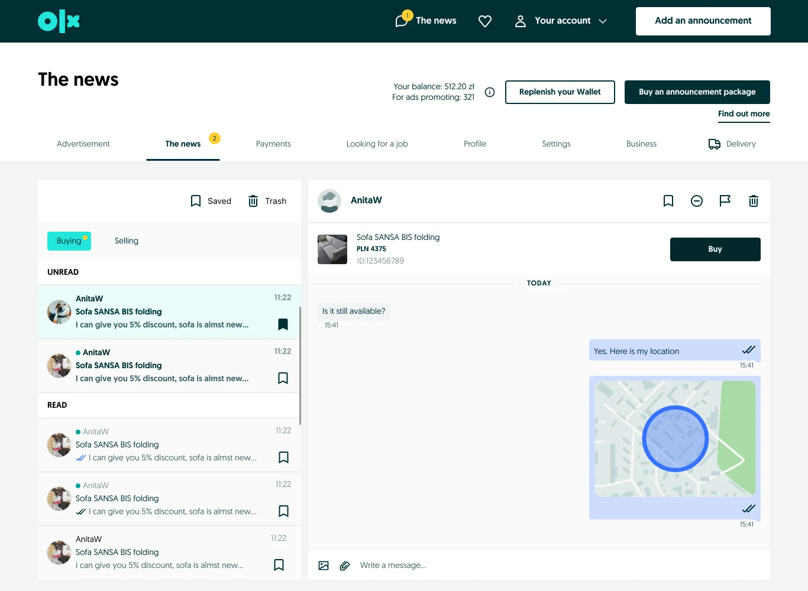
The old archive was a second long table. Now deleted conversations go to Bin, inside the same split view as the rest of the chat.
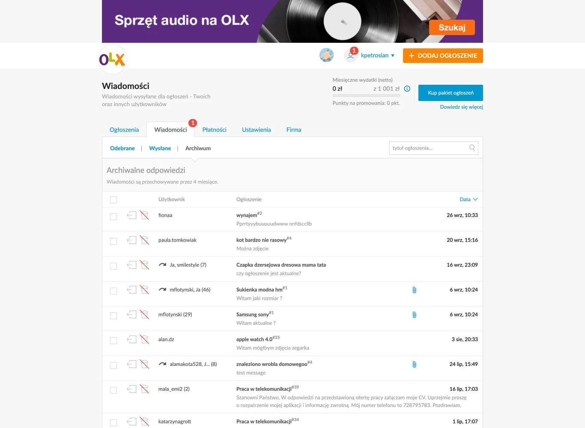
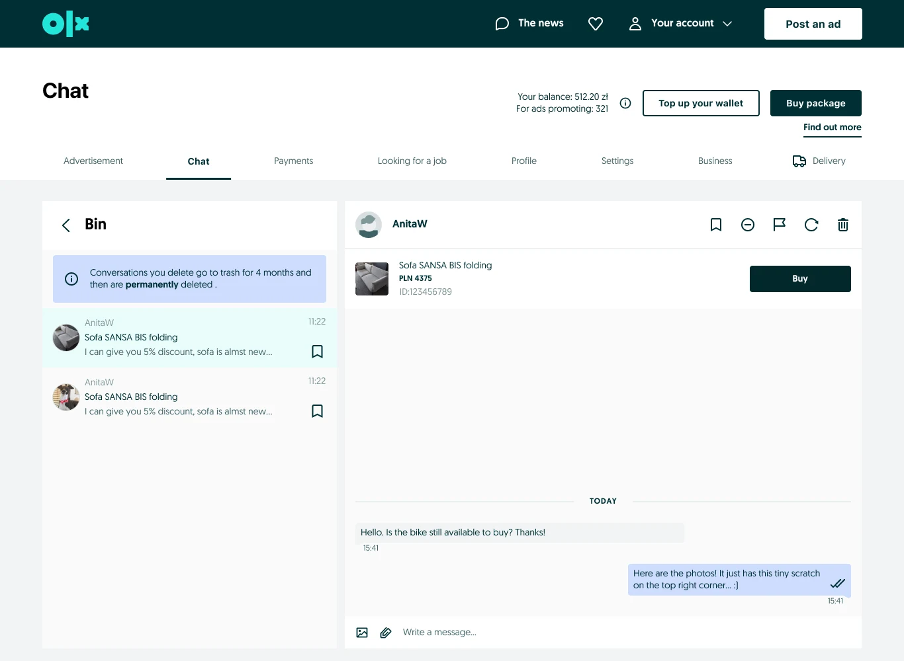
The app got the redesign too. Each pair of phones shows the old screens turning into the new ones.
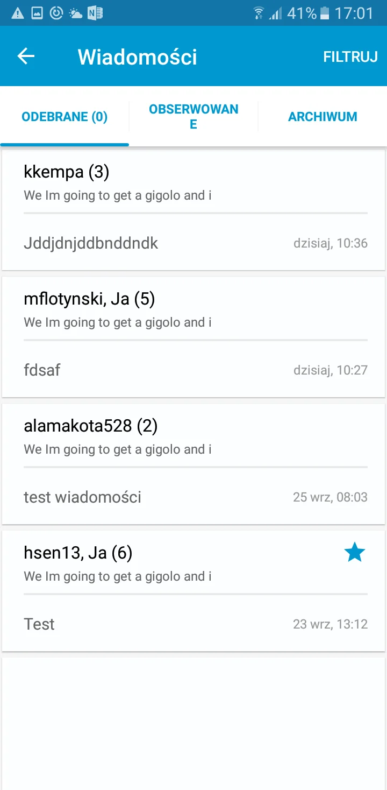
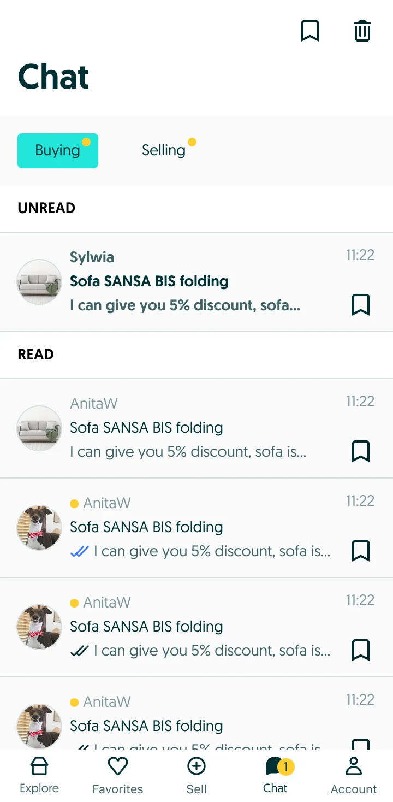
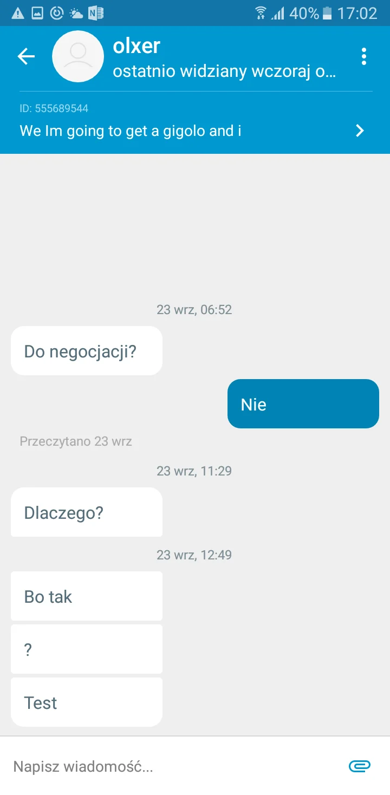
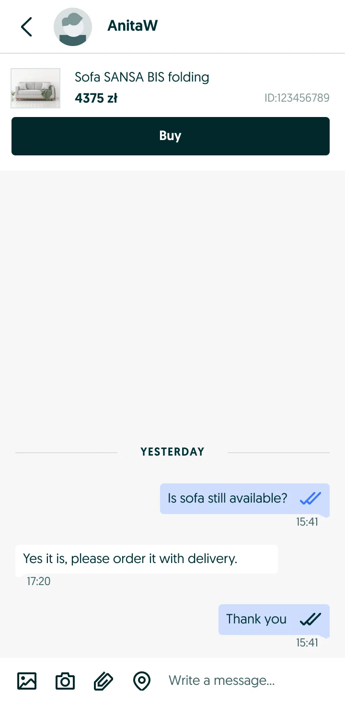
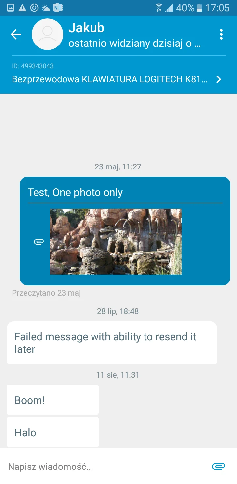
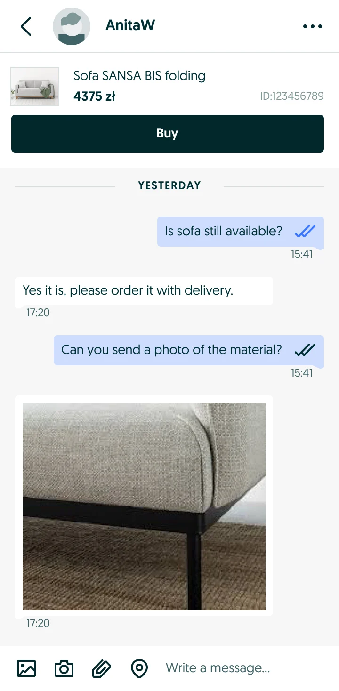
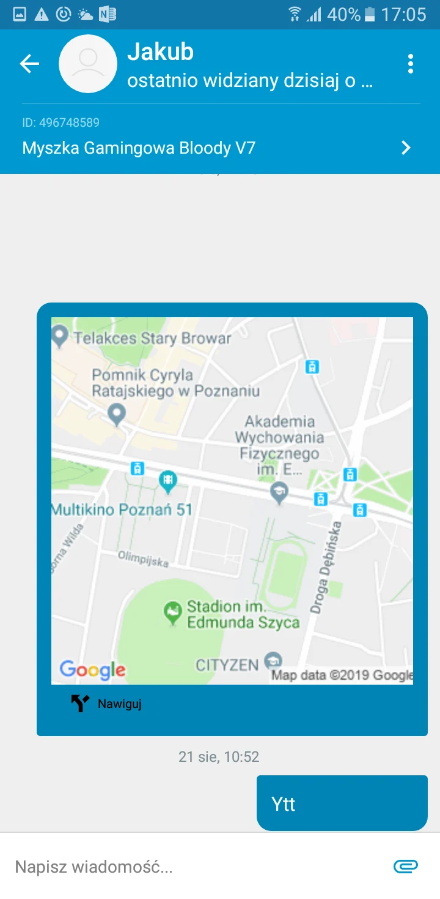
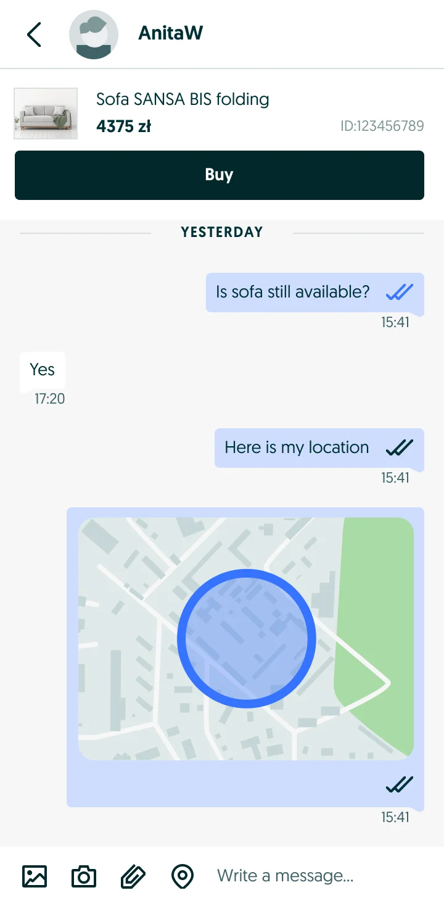